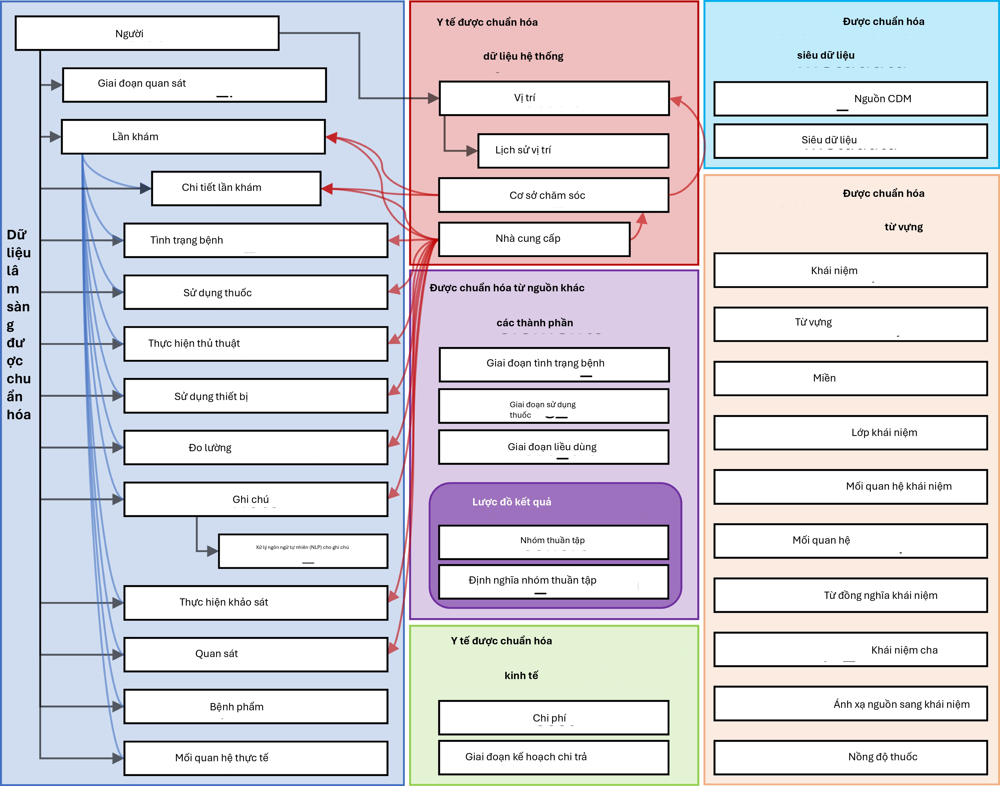
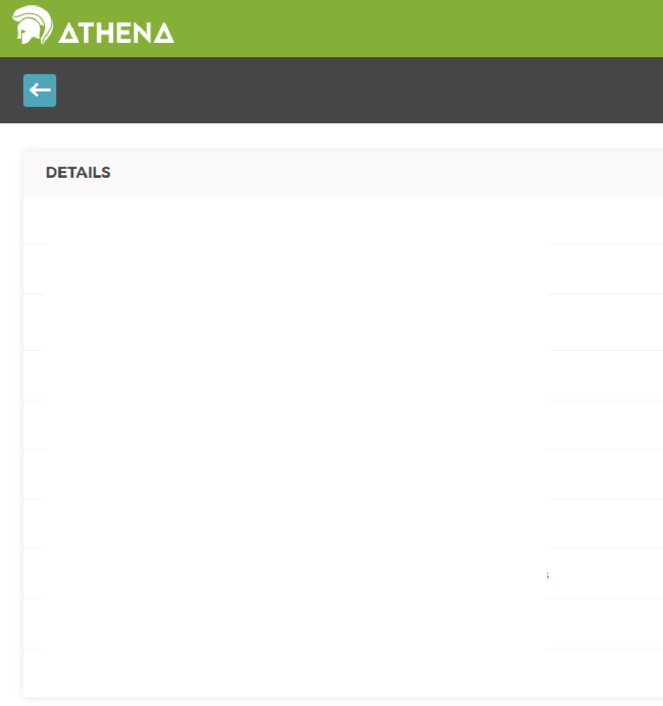
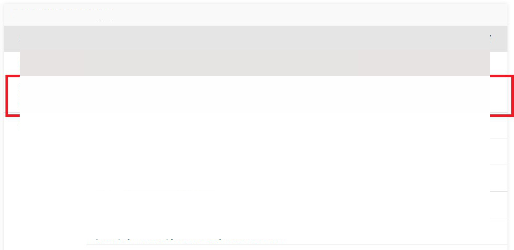

Chương 4: Mô hình dữ liệu chung (CDM)
Mô hình dữ liệu chung
Trưởng chương: Clair Blacketer
Dữ liệu quan sát cung cấp một cái nhìn về những gì xảy ra với bệnh nhân trong khi nhận chăm sóc sức khỏe. Dữ liệu được thu thập và lưu trữ cho số lượng bệnh nhân ngày càng lớn trên toàn thế giới tạo ra cái thường được gọi là Dữ liệu sức khỏe lớn (Big Health Data). Mục đích của các bộ sưu tập này có ba phần: (i) trực tiếp để tạo điều kiện nghiên cứu (thường dưới dạng dữ liệu khảo sát hoặc đăng ký), hoặc (ii) để hỗ trợ việc thực hiện chăm sóc sức khỏe (thường được gọi là EHR - Hồ sơ sức khỏe điện tử) hoặc (iii) để quản lý việc thanh toán cho chăm sóc sức khỏe (thường được gọi là dữ liệu yêu cầu thanh toán). Cả ba đều thường xuyên được sử dụng cho nghiên cứu lâm sàng, hai loại sau là dữ liệu sử dụng thứ cấp, và cả ba thường có định dạng và mã hóa nội dung độc đáo riêng.
Tại sao chúng ta cần một Mô hình dữ liệu chung cho dữ liệu chăm sóc sức khỏe quan sát?
Tùy thuộc vào nhu cầu chính của họ, không có cơ sở dữ liệu quan sát nào nắm bắt tất cả các sự kiện lâm sàng tốt như nhau. Do đó, kết quả nghiên cứu phải được rút ra từ nhiều nguồn dữ liệu khác nhau và được so sánh và đối chiếu để hiểu tác động của thiên kiến nắm bắt tiềm ẩn. Ngoài ra, để đưa ra kết luận với sức mạnh thống kê, chúng ta cần số lượng lớn bệnh nhân được quan sát. Điều đó giải thích nhu cầu đánh giá và phân tích đồng thời nhiều nguồn dữ liệu. Để làm được điều đó, dữ liệu cần được hài hòa thành một tiêu chuẩn dữ liệu chung. Ngoài ra, dữ liệu bệnh nhân yêu cầu mức độ bảo vệ cao. Để trích xuất dữ liệu cho mục đích phân tích như cách làm truyền thống đòi hỏi các thỏa thuận sử dụng dữ liệu nghiêm ngặt và kiểm soát truy cập phức tạp. Một tiêu chuẩn dữ liệu chung có thể làm giảm bớt nhu cầu này bằng cách bỏ qua bước trích xuất và cho phép một phân tích chuẩn hóa được thực thi trên dữ liệu trong môi trường gốc của nó - phân tích đến với dữ liệu thay vì dữ liệu đến với phân tích.
Tiêu chuẩn này được cung cấp bởi Mô hình dữ liệu chung (CDM). CDM, kết hợp với nội dung chuẩn hóa của nó (xem Chương 5), sẽ đảm bảo rằng các phương pháp nghiên cứu có thể được áp dụng một cách hệ thống để tạo ra các kết quả có thể so sánh và tái tạo một cách có ý nghĩa. Trong chương này, chúng tôi cung cấp tổng quan về chính mô hình dữ liệu, thiết kế, các quy ước và thảo luận về các bảng được chọn.
Tổng quan về tất cả các bảng trong CDM được cung cấp trong Hình 4.1.

Hình 4.1: Tổng quan về tất cả các bảng trong CDM phiên bản 6.0. Lưu ý rằng không phải tất cả các mối quan hệ giữa các bảng đều được hiển thị.
- Nguyên tắc thiết kế 33
Nguyên tắc thiết kế
CDM được tối ưu hóa cho các mục đích nghiên cứu quan sát điển hình của
Xác định các quần thể bệnh nhân với các can thiệp chăm sóc sức khỏe nhất định (tiếp xúc thuốc, thủ thuật, thay đổi chính sách chăm sóc sức khỏe, v.v.) và các kết quả (tình trạng, thủ thuật, các tiếp xúc thuốc khác, v.v.),
Đặc điểm hóa các quần thể bệnh nhân này cho các tham số khác nhau như thông tin nhân khẩu học, lịch sử tự nhiên của bệnh, cung cấp dịch vụ chăm sóc sức khỏe, sử dụng và chi phí, bệnh tật, các phương pháp điều trị và trình tự điều trị, v.v.,
Dự đoán sự xuất hiện của các kết quả này ở từng bệnh nhân riêng lẻ - xem Chương 13,
Ước tính tác động của các can thiệp này đối với một quần thể - xem Chương 12,
Để đạt được mục tiêu này, việc phát triển CDM tuân theo các yếu tố thiết kế sau:
Sự phù hợp với mục đích: CDM nhằm cung cấp dữ liệu được tổ chức theo cách tối ưu cho phân tích, thay vì cho mục đích giải quyết các nhu cầu vận hành của các nhà cung cấp dịch vụ chăm sóc sức khỏe hoặc người trả tiền.
Bảo vệ dữ liệu: Tất cả dữ liệu có thể gây nguy hiểm cho danh tính và sự bảo vệ của bệnh nhân, chẳng hạn như tên, ngày sinh chính xác, v.v. đều bị hạn chế. Các trường hợp ngoại lệ có thể xảy ra khi nghiên cứu yêu cầu rõ ràng thông tin chi tiết hơn, chẳng hạn như ngày sinh chính xác cho việc nghiên cứu trẻ sơ sinh.
Thiết kế các miền: Các miền được mô hình hóa trong một mô hình dữ liệu quan hệ lấy con người làm trung tâm, nơi đối với mỗi bản ghi, danh tính của người đó và ngày tháng được ghi lại như một mức tối thiểu. Ở đây, mô hình dữ liệu quan hệ là mô hình trong đó dữ liệu được đại diện dưới dạng một tập hợp các bảng được liên kết bởi các khóa chính và khóa ngoại.
Cơ sở cho các miền: Các miền được xác định và định nghĩa riêng biệt trong một mô hình thực thể-mối quan hệ nếu chúng có một trường hợp sử dụng phân tích (ví dụ: các tình trạng) và miền đó có các thuộc tính cụ thể không áp dụng theo cách khác. Tất cả các dữ liệu khác có thể được bảo tồn dưới dạng quan sát trong bảng quan sát trong cấu trúc thực thể-thuộc tính-giá trị.
Từ vựng chuẩn hóa: Để chuẩn hóa nội dung của các bản ghi đó, CDM dựa vào các Từ vựng chuẩn hóa chứa tất cả các khái niệm chăm sóc sức khỏe tiêu chuẩn tương ứng cần thiết và phù hợp.
Tái sử dụng các từ vựng hiện có: Nếu có thể, các khái niệm này được tận dụng từ các tổ chức hoặc sáng kiến định nghĩa từ vựng hoặc tiêu chuẩn hóa quốc gia hoặc ngành, chẳng hạn như Thư viện Y học Quốc gia, Bộ Cựu chiến binh, Trung tâm Kiểm soát và Phòng ngừa Dịch bệnh, v.v.
Duy trì mã nguồn: Mặc dù tất cả các mã đều được ánh xạ sang Từ vựng chuẩn hóa, mô hình cũng lưu trữ mã nguồn gốc để đảm bảo không có thông tin nào bị mất.
Tính trung lập về công nghệ: CDM không yêu cầu một công nghệ cụ thể. Nó có thể được hiện thực hóa trong bất kỳ cơ sở dữ liệu quan hệ nào, chẳng hạn như Oracle, SQL Server, v.v., hoặc dưới dạng các tập dữ liệu phân tích SAS.
Khả năng mở rộng: CDM được tối ưu hóa cho xử lý dữ liệu và phân tích tính toán để đáp ứng các nguồn dữ liệu có kích thước khác nhau, bao gồm các cơ sở dữ liệu với tối đa
hàng trăm triệu người và hàng tỷ quan sát lâm sàng.
- Khả năng tương thích ngược: Tất cả các thay đổi từ các CDM trước đây đều được nêu rõ trong kho lưu trữ github (https://github.com/OHDSI/CommonDataModel). Các phiên bản cũ hơn của CDM có thể dễ dàng được tạo từ phiên bản hiện tại, và không có thông tin nào bị mất vốn đã có trước đây.
Các quy ước mô hình dữ liệu
Có một số quy ước ngầm định và rõ ràng đã được áp dụng trong CDM. Các nhà phát triển các phương pháp chạy trên CDM cần phải hiểu các quy ước này.
Các quy ước chung của mô hình
CDM được coi là một mô hình “lấy con người làm trung tâm”, nghĩa là tất cả các bảng Sự kiện lâm sàng đều được liên kết với bảng PERSON. Cùng với ngày tháng hoặc ngày bắt đầu, điều này cho phép một cái nhìn dọc về tất cả các Sự kiện liên quan đến chăm sóc sức khỏe theo từng người. Các ngoại lệ đối với quy tắc này là các bảng dữ liệu hệ thống y tế chuẩn hóa, được liên kết trực tiếp với các Sự kiện của các miền khác nhau.
Các quy ước chung của các lược đồ
Các lược đồ (schemas), hoặc người dùng cơ sở dữ liệu trong một số hệ thống, cho phép phân tách giữa các bảng chỉ đọc và đọc-ghi. Các bảng Sự kiện lâm sàng và từ vựng nằm trong lược đồ “CDM” và được coi là chỉ đọc đối với người dùng cuối hoặc công cụ phân tích. Các bảng cần được thao tác bởi các công cụ dựa trên web hoặc người dùng cuối được lưu trữ trong lược đồ “Results”. Hai bảng trong lược đồ “Results” là COHORT và COHORT_DEFINITION. Các bảng này nhằm mô tả các nhóm quan tâm mà người dùng có thể xác định, như được trình bày chi tiết trong Chương
10. Các bảng này có thể được ghi vào, nghĩa là một nhóm thuần tập có thể được lưu trữ trong bảng COHORT tại thời điểm chạy. Vì chỉ có một lược đồ đọc-ghi cho tất cả người dùng, việc tổ chức và kiểm soát quyền truy cập của nhiều người dùng phụ thuộc vào việc triển khai CDM.
Các quy ước chung của các bảng dữ liệu
CDM là độc lập với nền tảng. Các kiểu dữ liệu được định nghĩa chung bằng các kiểu dữ liệu ANSI SQL (VARCHAR, INTEGER, FLOAT, DATE, DATETIME, CLOB). Độ chính xác chỉ được cung cấp cho VARCHAR. Nó phản ánh độ dài chuỗi tối thiểu cần thiết, nhưng có thể được mở rộng trong một lần khởi tạo CDM cụ thể. CDM không quy định định dạng ngày và ngày giờ. Các truy vấn tiêu chuẩn đối với CDM có thể thay đổi cho các phiên bản cục bộ và cấu hình ngày/ngày giờ.
Lưu ý: Mặc dù bản thân mô hình dữ liệu là độc lập với nền tảng, nhiều công cụ được xây dựng để làm việc với nó yêu cầu các thông số kỹ thuật nhất định. Để biết thêm về điều này, vui lòng xem Chương 8.
Các quy ước chung của các miền
Các sự kiện có bản chất khác nhau được tổ chức thành các Miền. Các Sự kiện này được lưu trữ trong các bảng và trường cụ thể theo Miền, và được đại diện bởi các Khái niệm Chuẩn cũng cụ thể theo Miền như được định nghĩa trong Từ vựng chuẩn hóa (xem phần 5.2.3). Mỗi Khái niệm Chuẩn có một nhiệm vụ Miền duy nhất, xác định bảng mà chúng được ghi lại. Mặc dù nhiệm vụ Miền chính xác là chủ đề gây tranh cãi trong cộng đồng, quy tắc tương ứng Miền-bảng-trường nghiêm ngặt này đảm bảo rằng luôn có một vị trí không mơ hồ cho bất kỳ mã hoặc khái niệm nào. Ví dụ, các Khái niệm về dấu hiệu, triệu chứng và chẩn đoán thuộc về Miền Tình trạng, và được ghi lại trong CONDITION_CONCEPT_ID của bảng CONDITION_OCCURRENCE. Các cái gọi là Thuốc Thủ thuật thường được ghi lại dưới dạng mã thủ thuật trong một bảng thủ thuật trong dữ liệu nguồn. Trong CDM, các bản ghi này được tìm thấy trong bảng DRUG_EXPOSURE vì các Khái niệm Chuẩn được ánh xạ có nhiệm vụ Miền là Thuốc. Có tổng cộng 30 Miền, như được hiển thị trong bảng 4.1.
Bảng 4.1: Số lượng các khái niệm chuẩn thuộc về mỗi miền.
Số lượng ID miền Số lượng ID miền khái niệm khái niệm ———- ————— ———– ————— 1731378 Thuốc 183 Đường dùng
477597 Thiết bị 180 Tiền tệ
257000 Thủ thuật 158 Bên chi trả
163807 Tình trạng 123 Lần khám
145898 Quan sát 51 Chi phí
89645 Đo lường 50 Chủng tộc
33759 Vị trí giải 13 Lý do dừng kế phẫu mẫu hoạch
17302 Giá trị đo 11 Kế hoạch lường
1799 Mẫu bệnh phẩm 6 Đợt điều trị
1215 Chuyên khoa nhà 6 Nhà tài trợ cung cấp
1046 Đơn vị 5 Toán tử giá trị đo lường
944 Siêu dữ liệu 3 Tình trạng bệnh của mẫu
538 Mã doanh thu 2 Giới tính
336 Khái niệm loại 2 Dân tộc
194 Mối quan hệ 1 Loại quan sát ***
Đại diện nội dung thông qua các Khái niệm
Trong các bảng dữ liệu CDM, nội dung của mỗi bản ghi được chuẩn hóa hoàn toàn và đại diện thông qua các Khái niệm. Các Khái niệm được lưu trữ trong các bảng Sự kiện với các giá trị CONCEPT_ID của chúng, là các khóa ngoại đến bảng CONCEPT, đóng vai trò là bảng tham chiếu chung. Tất cả các phiên bản CDM sử dụng cùng một bảng CONCEPT làm tham chiếu của các Khái niệm, cùng với Mô hình dữ liệu chung là một cơ chế chính của khả năng tương tác và là nền tảng của mạng lưới nghiên cứu OHDSI. Nếu một Khái niệm Chuẩn không tồn tại hoặc không thể xác định được, giá trị của CONCEPT_ID được đặt thành 0, đại diện cho một khái niệm không tồn tại, một giá trị không xác định hoặc không thể ánh xạ.
Các bản ghi trong bảng CONCEPT chứa thông tin chi tiết về từng khái niệm (tên, miền, lớp, v.v.). Các Khái niệm, Mối quan hệ Khái niệm, Tổ tiên Khái niệm và thông tin khác liên quan đến Khái niệm được chứa trong các bảng của Từ vựng chuẩn hóa (xem Chương 5).
Các quy ước đặt tên chung của các trường
Tên biến trên tất cả các bảng tuân theo một quy ước:
Bảng 4.2: Các quy ước tên trường.
Ký hiệu Mô tả
[Event]_ID Định danh duy nhất cho mỗi bản ghi, đóng vai trò là các khóa ngoại thiết lập mối quan hệ giữa các bảng Sự kiện. Ví dụ, PERSON_ID xác định duy nhất từng cá nhân. VISIT_OCCURRENCE_ID xác định duy nhất một Chuyến thăm.
[Event]_CONCEPT_ID Khóa ngoại đến một bản ghi Khái niệm Chuẩn trong
bảng tham chiếu CONCEPT. Đây là đại diện chính của Sự kiện, đóng vai trò là cơ sở chính cho tất cả các phân tích chuẩn hóa. Ví dụ, CONDITION_CONCEPT_ID = 31967 chứa giá trị tham chiếu cho khái niệm SNOMED về “Buồn nôn”.
[Event]_SOURCE
_CONCEPT_ID
Khóa ngoại đến một bản ghi trong bảng tham chiếu CONCEPT. Khái niệm này tương đương với Giá trị Nguồn (bên dưới), và nó có thể tình cờ là một Khái niệm Chuẩn, tại thời điểm đó nó sẽ giống hệt với [Event]_CONCEPT_ID, hoặc một khái niệm không chuẩn khác. Ví dụ, CONDITION_SOURCE_CONCEPT_ID =
45431665 biểu thị khái niệm “Buồn nôn” trong thuật ngữ Read, và CONDITION_CONCEPT_ID tương tự là Khái niệm SNOMED-CT Chuẩn 31967. Việc sử dụng các Khái niệm Nguồn cho các ứng dụng phân tích chuẩn không được khuyến khích vì chỉ các Khái niệm Chuẩn mới thể hiện nội dung ngữ nghĩa của một Sự kiện theo cách không mơ hồ và do đó các Khái niệm Nguồn không có khả năng tương tác.
Ký hiệu Mô tả
[Event]_TYPE_CONCEPT_ID Khóa ngoại đến một bản ghi trong bảng tham chiếu CONCEPT
đại diện cho nguồn gốc của thông tin nguồn, được chuẩn hóa trong Từ vựng chuẩn hóa. Lưu ý rằng mặc dù tên trường này không phải là một loại Sự kiện, hoặc loại Khái niệm, mà khai báo cơ chế nắm bắt đã tạo ra bản ghi này. Ví dụ, DRUG_TYPE_CONCEPT_ID phân biệt liệu một bản ghi Thuốc có được bắt nguồn từ một Sự kiện cấp phát trong nhà thuốc (“Cấp phát nhà thuốc”) hay từ một ứng dụng kê đơn điện tử (“Đơn thuốc đã viết”)
[Event]_SOURCE_VALUE Mã nguyên văn hoặc chuỗi văn bản tự do phản ánh cách
Sự kiện này được đại diện trong dữ liệu nguồn. Việc sử dụng nó không được khuyến khích cho các ứng dụng phân tích chuẩn, vì các Giá trị Nguồn này không được hài hòa giữa các nguồn dữ liệu. Ví dụ, CONDITION_SOURCE_VALUE có thể chứa một bản ghi “78702”, tương ứng với mã ICD-9
787.02 được viết theo ký hiệu bỏ dấu chấm.
Sự khác biệt giữa các Khái niệm và Giá trị Nguồn
Nhiều bảng chứa thông tin tương đương ở nhiều nơi: dưới dạng Giá trị Nguồn, Khái niệm Nguồn và Khái niệm Chuẩn.
Các Giá trị Nguồn là đại diện gốc của một bản ghi Sự kiện trong dữ liệu nguồn. Chúng có thể là các mã từ các hệ thống mã hóa được sử dụng rộng rãi, thường là phạm vi công cộng, chẳng hạn như ICD9CM, NDC hoặc Read, các hệ thống mã hóa độc quyền như CPT4, GPI hoặc MedDRA, hoặc các từ vựng được kiểm soát chỉ được sử dụng trong dữ liệu nguồn, chẳng hạn như F cho nữ và M cho nam. Chúng cũng có thể là các cụm từ văn bản tự do ngắn không được chuẩn hóa và kiểm soát. Các Giá trị Nguồn được lưu trữ trong các trường [Event]_SOURCE_VALUE trong các bảng dữ liệu.
Các Khái niệm là các thực thể cụ thể của CDM chuẩn hóa ý nghĩa của một sự kiện lâm sàng. Hầu hết các Khái niệm dựa trên các hệ thống mã hóa công cộng hoặc độc quyền hiện có trong chăm sóc sức khỏe, trong khi những khái niệm khác được tạo ra de-novo (CONCEPT_CODE bắt đầu bằng “OMOP”). Các Khái niệm có các ID duy nhất trên tất cả các miền.
Các Khái niệm Nguồn là các Khái niệm đại diện cho mã được sử dụng trong nguồn. Các Khái niệm Nguồn chỉ được sử dụng cho các hệ thống mã hóa công cộng hoặc độc quyền hiện có, không phải cho các Khái niệm do OMOP tạo ra. Các Khái niệm Nguồn được lưu trữ trong trường [Event]_SOURCE_CONCEPT_ID trong các bảng dữ liệu.
Các Khái niệm Chuẩn là những Khái niệm được sử dụng để xác định ý nghĩa của một thực thể lâm sàng một cách duy nhất trên tất cả các cơ sở dữ liệu và độc lập với hệ thống mã hóa được sử dụng trong các nguồn. Các Khái niệm Chuẩn thường được rút ra từ các nguồn từ vựng công cộng hoặc độc quyền hiện có.
Các Khái niệm không chuẩn có ý nghĩa tương đương với một Khái niệm Chuẩn có một ánh xạ đến Khái niệm Chuẩn trong Từ vựng chuẩn hóa. Các Khái niệm Chuẩn được tham chiếu trong trường [Event]_CONCEPT_ID của các bảng dữ liệu.
Các Giá trị Nguồn chỉ được cung cấp cho mục đích thuận tiện và đảm bảo chất lượng (QA). Chúng có thể chứa thông tin chỉ có ý nghĩa trong bối cảnh của một nguồn dữ liệu cụ thể. Việc sử dụng các Giá trị Nguồn và Khái niệm Nguồn là tùy chọn, mặc dù được khuyến khích mạnh mẽ nếu dữ liệu nguồn sử dụng các hệ thống mã hóa. Tuy nhiên, các Khái niệm Chuẩn là bắt buộc. Việc sử dụng bắt buộc các Khái niệm Chuẩn này là điều cho phép tất cả các phiên bản CDM nói cùng một ngôn ngữ. Ví dụ, tình trạng “Lao phổi” (TB, Hình 4.2) cho thấy mã ICD9CM cho TB là 011.

Hình 4.2: Mã ICD9CM cho Lao phổi
Nếu không có ngữ cảnh, mã 011 có thể được hiểu là “Bệnh nhân nội trú (Bao gồm Medicare Phần A)” từ từ vựng UB04, hoặc là “U hệ thần kinh không có biến chứng, bệnh đi kèm” từ từ vựng DRG. Đây là nơi các ID Khái niệm, cả Nguồn và Chuẩn, trở nên có giá trị. Giá trị CONCEPT_ID đại diện cho mã ICD9CM 011 là 44828631. Điều này phân biệt ICD9CM với UBO4 và DRG. Khái niệm Nguồn TB ICD9CM ánh xạ sang Khái niệm Chuẩn 253954 từ SNOMED
từ vựng thông qua mối quan hệ "Ánh xạ từ không chuẩn sang chuẩn (OMOP)" như được hiển thị trong hình 4.3. Mối quan hệ ánh xạ tương tự cũng tồn tại đối với các mã Read, ICD10, CIEL và MeSH, cùng nhiều mã khác, để đảm bảo rằng bất kỳ nghiên cứu nào tham chiếu đến khái niệm SNOMED chuẩn đều chắc chắn bao gồm tất cả các mã nguồn được hỗ trợ.

Hình 4.3: Mã SNOMED cho bệnh Lao phổi
Một ví dụ về cách mô tả mối quan hệ giữa Khái niệm chuẩn và Khái niệm nguồn được hiển thị trong Bảng 4.7.
Các bảng chuẩn hóa CDM
CDM chứa 16 bảng Sự kiện lâm sàng, 10 bảng Từ vựng, 2 bảng siêu dữ liệu, 4 bảng dữ liệu hệ thống y tế, 2 bảng dữ liệu kinh tế y tế, 3 phần tử dẫn xuất chuẩn hóa và 2 bảng lược đồ Kết quả. Các bảng này được quy định đầy đủ trong CDM Wiki.1
Để minh họa cách các bảng này được sử dụng trong thực tế, dữ liệu của một cá nhân sẽ được sử dụng làm sợi chỉ xuyên suốt phần còn lại của chương.
Ví dụ thực tế: Lạc nội mạc tử cung
Lạc nội mạc tử cung là một tình trạng đau đớn, trong đó các tế bào thường được tìm thấy trong niêm mạc tử cung của phụ nữ lại xuất hiện ở những nơi khác trong cơ thể. Các trường hợp nghiêm trọng có thể dẫn đến vô sinh, các vấn đề về ruột và bàng quang. Các phần sau đây sẽ trình bày chi tiết trải nghiệm của một bệnh nhân với căn bệnh này và cách nó có thể được thể hiện trong Mô hình dữ liệu chung (CDM).
1https://github.com/OHDSI/CommonDataModel/wiki
Mỗi bước trong hành trình đau đớn này, tôi phải thuyết phục mọi người rằng mình đang đau đớn đến mức nào.
Lauren đã gặp phải các triệu chứng lạc nội mạc tử cung trong nhiều năm; tuy nhiên, phải đến khi một u nang trong buồng trứng bị vỡ, cô mới được chẩn đoán. Bạn có thể đọc thêm về Lauren tại https://endometriosis-uk.org/laurens-story.
Bảng PERSON (Người)
Chúng ta biết gì về Lauren?
Cô ấy là một phụ nữ 36 tuổi
Ngày sinh của cô ấy là 12-03-1982
Cô ấy là người da trắng
Cô ấy là người Anh
Với suy nghĩ đó, bảng PERSON của cô ấy có thể trông như thế này:
Bảng 4.3: Bảng PERSON.
Tên cột Giá trị Giải thích
PERSON_ID 1 PERSON_ID phải là một số nguyên,
lấy trực tiếp từ nguồn hoặc được tạo ra như một phần của quá trình xây dựng.
GENDER_CONCEPT_ID 8532 ID khái niệm chỉ giới tính nữ
là 8532.
YEAR_OF_BIRTH 1982
MONTH_OF_BIRTH 3
DAY_OF_BIRTH 12
BIRTH_DATETIME 1982-03-12
00:00:00
Khi không biết thời gian cụ thể, nửa đêm sẽ được sử dụng.
DEATH_DATETIME
Tên cột Giá trị Giải thích
RACE_CONCEPT_ID 8527 ID khái niệm chỉ chủng tộc da trắng là
8527. Sắc tộc Anh là 4093769. Cả hai đều đúng, cái sau sẽ được gộp vào cái trước. Lưu ý rằng sắc tộc được lưu trữ ở đây như một phần của Chủng tộc, không phải trong ETHNICITY_CONCEPT_ID
ETHNICITY_CONCEPT_ 38003564 Đây là ký hiệu điển hình của Hoa Kỳ để phân biệt
ID người gốc Tây Ban Nha với những người còn lại. Sắc tộc, trong trường hợp này là người Anh, được lưu trữ trong RACE_CONCEPT_ID. Bên ngoài Hoa Kỳ, điều này không được sử dụng. 38003564 đề cập đến "Không phải người gốc Tây Ban Nha".
LOCATION_ID Địa chỉ của cô ấy không được biết.
PROVIDER_ID Nhà cung cấp dịch vụ chăm sóc chính của cô ấy không được biết.
CARE_SITE Cơ sở chăm sóc chính của cô ấy không được biết.
PERSON_SOURCE_ VALUE
Giới tính_SOURCE_ VALUE Giới tính_SOURCE_ CONCEPT_ID
RACE_SOURCE_ VALUE RACE_SOURCE_ CONCEPT_ID ETHNICITY_SOURCE_ VALUE ETHNICITY_SOURCE_ CONCEPT_ID
1 Thông thường đây sẽ là mã định danh của cô ấy trong dữ liệu nguồn, mặc dù thường nó giống với PERSON_ID.
F Giá trị giới tính như xuất hiện trong nguồn được lưu trữ ở đây.
0 Nếu giá trị giới tính trong nguồn được mã hóa bằng cách sử dụng hệ thống mã hóa được OHDSI hỗ trợ, Khái niệm đó sẽ nằm ở đây. Ví dụ, nếu giới tính của cô ấy là "sex-F" trong nguồn và được xác định là thuộc từ vựng PCORNet, khái niệm 44814665 sẽ đi vào trường này.
white Giá trị chủng tộc như xuất hiện trong nguồn được lưu trữ ở đây.
0 Nguyên tắc tương tự như GENDER_SOURCE_CONCEPT_ID.
english Giá trị sắc tộc như xuất hiện trong nguồn được lưu trữ ở đây.
0 Nguyên tắc tương tự như GENDER_SOURCE_CONCEPT_ID.
- Bảng OBSERVATION_PERIOD (Thời kỳ quan sát)
Bảng OBSERVATION_PERIOD được thiết kế để xác định khoảng thời gian mà ít nhất các thông tin về nhân khẩu học, tình trạng bệnh, thủ thuật và thuốc của bệnh nhân được ghi lại trong hệ thống nguồn với kỳ vọng về độ nhạy và độ đặc hiệu hợp lý. Đối với dữ liệu bảo hiểm, đây thường là thời gian đăng ký của bệnh nhân. Điều này phức tạp hơn trong hồ sơ sức khỏe điện tử (EHR), vì hầu hết các hệ thống chăm sóc sức khỏe không xác định được cơ sở
hoặc nhà cung cấp dịch vụ chăm sóc sức khỏe nào đã được thăm khám. Giải pháp tốt nhất tiếp theo, thường là bản ghi đầu tiên trong hệ thống được coi là Ngày bắt đầu của Thời kỳ Quan sát và bản ghi mới nhất được coi là Ngày kết thúc.
Thời kỳ quan sát của Lauren được xác định như thế nào?
Giả sử thông tin của Lauren như hiển thị trong Bảng 4.4 được ghi lại giống như trong hệ thống EHR. Các lần gặp mặt của cô ấy mà từ đó Thời kỳ Quan sát được rút ra là:
Bảng 4.4: Các lần gặp mặt chăm sóc sức khỏe của Lauren.
ID lần Ngày bắt đầu Ngày kết Loại gặp thúc ——— ———— ———— ——– 70 2010-01-06 2010-01-06 ngoại trú
80 2011-01-06 2011-01-06 ngoại trú
90 2012-01-06 2012-01-06 ngoại trú
100 2013-01-07 2013-01-07 ngoại trú
101 2013-01-14 2013-01-14 điều trị ngoại trú
102 2013-01-17 2013-01-24 nội trú ***
Dựa trên các bản ghi gặp mặt, bảng OBSERVATION_PERIOD của cô ấy có thể trông như thế này:
Bảng 4.5: Bảng OBSERVATION_PERIOD.
Tên cột Giá trị Giải thích
QUAN SÁT_ PERIOD_ID
1 Đây thường là một giá trị tự động tạo ra, tạo nên một mã định danh duy nhất cho mỗi bản ghi trong bảng.
PERSON_ID 1 Đây là khóa ngoại dẫn đến bản ghi của Laura trong
bảng PERSON và liên kết PERSON với bảng OBSERVATION_PERIOD.
OBSERVATION_PERIOD_2010-01-06 Đây là ngày bắt đầu của lần gặp mặt sớm nhất
START_DATE của cô ấy trong hồ sơ.
OBSERVATION_PERIOD_2013-01-24 Đây là ngày kết thúc của lần gặp mặt mới nhất
END_DATE PERIOD_TYPE_ CONCEPT_ID
trong hồ sơ.
44814725 Lựa chọn tốt nhất trong Từ vựng với lớp khái niệm “Obs Period Type” là 44814724, viết tắt của “Thời kỳ bao gồm các lần gặp mặt chăm sóc sức khỏe”.
- VISIT_OCCURRENCE
Bảng VISIT_OCCURRENCE chứa thông tin về các lần gặp mặt của bệnh nhân với hệ thống chăm sóc sức khỏe. Trong thuật ngữ OHDSI, các lần này được gọi là Lần thăm khám (Visits) và được
coi là các sự kiện riêng biệt. Có 12 danh mục cấp cao nhất về Lần thăm khám với hệ thống phân cấp mở rộng, mô tả nhiều hoàn cảnh khác nhau mà dịch vụ chăm sóc sức khỏe có thể được cung cấp. Các Lần thăm khám phổ biến nhất được ghi lại là nội trú, ngoại trú, khoa cấp cứu và các Lần thăm khám tại cơ sở phi y tế.
Các lần gặp mặt của Lauren được thể hiện như thế nào dưới dạng Lần thăm khám?
Ví dụ, hãy thể hiện lần gặp mặt nội trú trong Bảng 4.4 trong bảng VISIT_OCCURRENCE.
Bảng 4.6: bảng VISIT_OCCURRENCE.
Tên cột Giá trị Giải thích
VISIT_OCCURRENCE_ ID
514 Đây thường là một giá trị tự động tạo ra, tạo nên một mã định danh duy nhất cho mỗi bản ghi.
PERSON_ID 1 Đây là khóa ngoại dẫn đến bản ghi của Laura trong
bảng PERSON và liên kết PERSON với VISIT_OCCURRENCE.
VISIT_CONCEPT_ID 9201 Khóa ngoại đề cập đến một Lần thăm khám
Nội trú là 9201.
VISIT_START_DATE 2013-01-17 Ngày bắt đầu của Lần thăm khám.
VISIT_START_ DATETIME
2013-01-17
00:00:00
Ngày và giờ của Lần thăm khám. Thời gian không được biết, vì vậy nửa đêm được sử dụng.
VISIT_END_DATE 2013-01-24 Ngày kết thúc của Lần thăm khám. Nếu đây là
một Lần thăm khám trong một ngày, ngày kết thúc phải khớp với ngày bắt đầu.
VISIT_END_DATETIME 24-01-2013
00:00:00
Ngày và giờ kết thúc của Lần thăm khám. Thời gian không được biết, vì vậy nửa đêm được sử dụng.
VISIT_TYPE_ CONCEPT_ID
32034 Điều này cung cấp thông tin về
nguồn gốc của bản ghi Lần thăm khám, ví dụ: nó đến từ yêu cầu bảo hiểm, hóa đơn bệnh viện, bản ghi EHR, v.v. Đối với ví dụ này, ID khái niệm 32035 ("Lần thăm khám bắt nguồn từ bản ghi gặp mặt EHR") được sử dụng vì các lần gặp mặt tương tự như Hồ sơ sức khỏe điện tử
PROVIDER_ID* NULL Nếu bản ghi gặp mặt có nhà cung cấp
liên quan, ID cho nhà cung cấp đó sẽ đi vào trường này. Đây phải là nội dung của trường PROVIDER_ID từ bảng PROVIDER.
Tên cột Giá trị Giải thích
CARE_SITE_ID NULL Nếu bản ghi gặp mặt có Cơ sở chăm sóc
liên quan, ID cho Cơ sở chăm sóc đó sẽ đi vào trường này. Đây phải là CARE_SITE_ID từ bảng CARE_SITE.
VISIT_SOURCE_ VALUE VISIT_SOURCE_ CONCEPT_ID
ADMITTED_FROM_ CONCEPT_ID
ADMITTED_FROM_ SOURCE_CONCEPT_ID
DISCHARGE_TO_ CONCEPT_ID
DISCHARGE_TO_ SOURCE_VALUE
PRECEDING_VISIT_ OCCURRENCE_ID
inpatient Giá trị Lần thăm khám như xuất hiện trong nguồn đi vào đây. Dữ liệu của Lauren không có thông tin đó.
0 Nếu giá trị Lần thăm khám từ nguồn được mã hóa bằng từ vựng được OHDSI công nhận, giá trị CONCEPT_ID đại diện cho mã nguồn sẽ được tìm thấy ở đây. Dữ liệu của Lauren không có thông tin đó.
0 Nếu biết, trường này chứa một Khái niệm đại diện cho nơi bệnh nhân được nhập viện từ đó. Khái niệm này phải có miền "Lần thăm khám". Ví dụ, nếu bệnh nhân được nhập viện từ nhà, nó sẽ chứa 8536 ("Nhà").
NULL Đây là giá trị từ nguồn
đại diện cho nơi bệnh nhân được nhập viện từ đó. Sử dụng ví dụ trên, đây sẽ là "nhà".
0 Nếu biết, trường này đề cập đến một Khái niệm đại diện cho nơi bệnh nhân được xuất viện đến. Khái niệm này phải có miền "Lần thăm khám". Ví dụ, nếu một bệnh nhân được xuất viện đến một cơ sở hỗ trợ sinh hoạt, ID khái niệm sẽ là 8615 ("Cơ sở hỗ trợ sinh hoạt").
0 Đây là giá trị từ nguồn đại diện cho nơi bệnh nhân được xuất viện đến. Sử dụng ví dụ trên, đây sẽ là "Cơ sở hỗ trợ sinh hoạt".
NULL Điều này biểu thị Lần thăm khám ngay
trước lần hiện tại. Ngược lại với ADMITTED_FROM_CONCEPT_ID, điều này
liên kết với bản ghi Lần thăm khám thực tế thay vì một Khái niệm Lần thăm khám. Ngoài ra, lưu ý rằng không có bản ghi cho Lần thăm khám tiếp theo, các Lần thăm khám chỉ được liên kết thông qua trường này.
- Một bệnh nhân có thể tương tác với nhiều Nhà cung cấp dịch vụ chăm sóc sức khỏe trong một lần thăm khám, như
thường xảy ra với các ca nội trú. Những tương tác này có thể được ghi lại trong bảng VISIT_DETAIL. Mặc dù không được đề cập sâu trong chương này, bạn có thể đọc thêm về bảng VISIT_DETAIL trong wiki CDM.
- CONDITION_OCCURRENCE
Các bản ghi trong bảng CONDITION_OCCURRENCE là các chẩn đoán, dấu hiệu hoặc triệu chứng của một tình trạng bệnh được Nhà cung cấp dịch vụ quan sát hoặc được bệnh nhân báo cáo.
Tình trạng bệnh của Lauren là gì?
Xem lại lời kể của cô ấy, cô ấy nói:
Khoảng 3 năm trước, tôi nhận thấy chu kỳ kinh nguyệt của mình, vốn đã đau đớn, ngày càng đau hơn. Tôi bắt đầu cảm thấy một cơn đau nhói ngay cạnh đại tràng và cảm thấy đau nhức, đầy hơi quanh vùng xương cụt và vùng chậu dưới. Chu kỳ kinh nguyệt của tôi trở nên đau đớn đến mức tôi phải nghỉ làm 1-2 ngày mỗi tháng. Thuốc giảm đau đôi khi làm dịu cơn đau, nhưng thường thì chúng không có tác dụng nhiều.
Mã SNOMED cho chứng đau bụng kinh, hay còn gọi là thống kinh, là 266599000. Bảng 4.7 cho thấy cách điều đó sẽ được thể hiện trong bảng CONDITION_OCCURRENCE:
Bảng 4.7: Bảng CONDITION_OCCURRENCE.
Tên cột Giá trị Giải thích
ĐIỀU KIỆN_ OCCURRENCE_ID
964 Đây thường là một giá trị tự động tạo ra, tạo nên một mã định danh duy nhất cho mỗi bản ghi.
PERSON_ID 1 Đây là khóa ngoại dẫn đến bản ghi của Laura trong
bảng PERSON và liên kết PERSON với CONDITION_OCCURRENCE.
CONDITION_ CONCEPT_ID CONDITION_START_ DATE
194696 Khóa ngoại đề cập đến mã SNOMED 266599000: 194696.
2010-01-06 Ngày khi trường hợp Tình trạng bệnh
được ghi lại.
CONDITION_START_ DATETIME
2010-01-06
00:00:00
Ngày và giờ khi trường hợp Tình trạng bệnh được ghi lại. Nửa đêm được sử dụng vì thời gian không được biết.
CONDITION_END_ DATE
CONDITION_END_ DATETIME
NULL Đây là ngày khi trường hợp Tình trạng bệnh được coi là đã kết thúc, nhưng điều này hiếm khi được ghi lại.
NULL Nếu biết, đây là ngày và giờ khi trường hợp Tình trạng bệnh được coi là đã kết thúc.
Tên cột Giá trị Giải thích
CONDITION_TYPE_ CONCEPT_ID
CONDITION_STATUS_ CONCEPT_ID
32020 Cột này nhằm cung cấp
thông tin về nguồn gốc của bản ghi, ví dụ: nó đến từ yêu cầu bảo hiểm, hóa đơn bệnh viện, bản ghi EHR, v.v. Đối với ví dụ này, khái niệm 32020 ("Chẩn đoán gặp mặt EHR") được sử dụng vì các lần gặp mặt tương tự như hồ sơ sức khỏe điện tử. Các khái niệm trong trường này phải thuộc từ vựng "Condition Type".
0 Nếu biết, điều này cho biết hoàn cảnh. Ví dụ, một tình trạng bệnh có thể là chẩn đoán nhập viện, trong trường hợp đó ID khái niệm 4203942 đã được sử dụng.
STOP_REASON NULL Nếu biết, lý do mà Tình trạng bệnh
không còn hiện diện nữa, như được chỉ ra trong dữ liệu nguồn.
PROVIDER_ID NULL Nếu bản ghi tình trạng bệnh có nhà cung cấp
chẩn đoán được liệt kê, ID cho nhà cung cấp đó sẽ đi vào trường này. Đây phải là provider_id từ bảng PROVIDER đại diện cho nhà cung cấp trong lần gặp mặt.
VISIT_OCCURRENCE_ ID
CONDITION_SOURCE_ VALUE
509 Lần thăm khám (khóa ngoại dẫn đến VISIT_OCCURRENCE_ID trong
bảng VISIT_OCCURRENCE) trong đó Tình trạng bệnh được chẩn đoán.
266599000 Đây là giá trị nguồn ban đầu
đại diện cho Tình trạng bệnh. Trong trường hợp thống kinh của Lauren, mã SNOMED cho Tình trạng đó được lưu trữ ở đây, trong khi Khái niệm đại diện cho mã đó đi vào CONDITION_SOURCE_CONCEPT_ID
và Khái niệm chuẩn được ánh xạ từ đó được lưu trữ trong trường CONDITION_CONCEPT_ID.
Tên cột Giá trị Giải thích
CONDITION_SOURCE_ 194696 Nếu giá trị tình trạng từ nguồn
CONCEPT_ID
CONDITION_STATUS_ SOURCE_VALUE
được mã hóa bằng từ vựng được OHDSI công nhận, ID khái niệm đại diện cho giá trị đó sẽ đi vào đây. Trong ví dụ về thống kinh, giá trị nguồn là mã SNOMED nên Khái niệm đại diện cho mã đó là 194696. Trong trường hợp này, nó có cùng giá trị với trường CONDITION_CONCEPT_ID.
0 Nếu giá trị Trạng thái tình trạng từ nguồn được mã hóa bằng hệ thống mã hóa được OHDSI hỗ trợ, khái niệm đó sẽ đi vào đây.
- DRUG_EXPOSURE (Sử dụng thuốc)
Bảng DRUG_EXPOSURE ghi lại các bản ghi về ý định hoặc việc thực tế đưa một loại thuốc vào cơ thể bệnh nhân. Thuốc bao gồm thuốc kê đơn và thuốc không kê đơn, vắc-xin và các liệu pháp sinh học phân tử lớn. Việc tiếp xúc với thuốc được suy ra từ các sự kiện lâm sàng liên quan đến đơn đặt hàng, đơn thuốc được viết, thuốc được cấp phát tại nhà thuốc, quản lý thủ thuật và các thông tin khác do bệnh nhân báo cáo.
Việc sử dụng thuốc của Lauren được thể hiện như thế nào?
Để giúp giảm đau do thống kinh, Lauren đã được cho 60 viên nén uống với 375 mg Acetaminophen (hay còn gọi là Paracetamol, ví dụ: được bán tại Hoa Kỳ dưới mã NDC 69842087651) mỗi viên trong 30 ngày tại Lần thăm khám vào ngày 06-01-2010. Đây là cách điều đó có thể trông như thế nào trong bảng DRUG_EXPOSURE:
Bảng 4.8: Bảng DRUG_EXPOSURE.
Tên cột Giá trị Giải thích
DRUG_EXPOSURE_ID 1001 Đây thường là một giá trị tự động tạo ra
tạo nên một mã định danh duy nhất cho mỗi bản ghi.
PERSON_ID 1 Đây là khóa ngoại dẫn đến bản ghi của Laura trong
bảng PERSON và liên kết PERSON với DRUG_EXPOSURE.
DRUG_CONCEPT_ID 1127433 Khái niệm cho sản phẩm Thuốc. Mã
NDC cho acetaminophen ánh xạ tới mã RxNorm 313782, được đại diện bởi Khái niệm 1127433.
DRUG_EXPOSURE_ START_DATE
2010-01-06 Ngày bắt đầu tiếp xúc với Thuốc.
Tên cột Giá trị Giải thích
DRUG_EXPOSURE_ START_DATETIME
2010-01-06
00:00:00
Ngày và giờ bắt đầu tiếp xúc với thuốc. Nửa đêm được sử dụng vì thời gian không được biết.
DRUG_EXPOSURE_ END_DATE
2010-02-05 Ngày kết thúc tiếp xúc với Thuốc.
Tùy thuộc vào các nguồn khác nhau, đây có thể là ngày đã biết hoặc ngày được suy luận và biểu thị ngày cuối cùng bệnh nhân vẫn tiếp xúc với thuốc. Trong trường hợp này, ngày này được suy luận vì chúng ta biết Lauren đã có nguồn cung cấp trong 30 ngày.
DRUG_EXPOSURE_ END_DATETIME
2010-02-05
00:00:00
Ngày và giờ kết thúc tiếp xúc với thuốc. Các quy tắc tương tự áp dụng như đối với DRUG_EXPOSURE_END_DATE.
Nửa đêm được sử dụng vì thời gian không được biết.
VERBATIM_END_DATE NULL Nếu nguồn ghi lại một ngày kết thúc
thực tế rõ ràng. Ngày kết thúc được suy luận dựa trên giả định rằng toàn bộ phạm vi ngày cung cấp đã được bệnh nhân sử dụng.
DRUG_TYPE_ CONCEPT_ID
38000177 Cột này nhằm cung cấp
thông tin về nguồn gốc của bản ghi, ví dụ: nó đến từ yêu cầu bảo hiểm, bản ghi đơn thuốc, v.v. Đối với ví dụ này, khái niệm 38000177 ("Đơn thuốc được viết") được sử dụng.
STOP_REASON NULL Lý do việc sử dụng Thuốc
bị dừng lại. Các lý do bao gồm chế độ điều trị đã hoàn thành, đã thay đổi, đã loại bỏ, v.v. Thông tin này rất hiếm khi được ghi lại.
REFILLS NULL Số lần cấp lại thuốc tự động sau đơn thuốc ban đầu là một phần của hệ thống đơn thuốc ở nhiều quốc gia. Đơn thuốc ban đầu không được tính, các giá trị bắt đầu bằng NULL. Trong trường hợp acetaminophen của Lauren, cô ấy không có lần cấp lại nào nên giá trị là NULL.
QUANTITY 60 Số lượng thuốc như được ghi lại trong
đơn thuốc hoặc bản ghi cấp phát ban đầu.
DAYS_SUPPLY 30 Số ngày cung cấp
thuốc như đã kê đơn.
Tên cột Giá trị Giải thích
SIG NULL Hướng dẫn ("signetur") trên đơn thuốc như được ghi lại trong đơn thuốc hoặc bản ghi cấp phát ban đầu (và được in trên hộp thuốc trong hệ thống đơn thuốc của Hoa Kỳ). Signeturs chưa được chuẩn hóa trong CDM và được cung cấp nguyên văn.
ROUTE_CONCEPT_ID 4132161 Khái niệm này nhằm đại diện cho
đường dùng của Thuốc mà bệnh nhân đã tiếp xúc. Lauren dùng acetaminophen bằng đường uống nên ID khái niệm 4132161 ("Đường uống") được sử dụng.
LOT_NUMBER NULL Một mã định danh được gán cho một
số lượng hoặc lô sản phẩm Thuốc cụ thể từ nhà sản xuất. Thông tin này hiếm khi được ghi lại.
PROVIDER_ID NULL Nếu bản ghi thuốc có nhà cung cấp kê đơn
Nếu có nhà cung cấp được liệt kê, ID của nhà cung cấp đó sẽ được đưa vào trường này. Trong trường hợp đó, nó chứa PROVIDER_ID từ bảng PROVIDER.
ID LƯỢT KHÁM
509 Khóa ngoại liên kết đến bảng VISIT_OCCURRENCE trong thời gian Thuốc được kê đơn.
VISIT_DETAIL_ID NULL Khóa ngoại liên kết đến bảng VISIT_DETAIL
trong thời gian Thuốc được kê đơn.
GIÁ TRỊ NGUỒN THUỐC
ID KHÁI NIỆM NGUỒN THUỐC
GIÁ TRỊ NGUỒN ĐƯỜNG DÙNG
69842087651 Đây là mã nguồn của Thuốc như xuất hiện trong dữ liệu nguồn. Trong trường hợp của Lauren, mã NDC được lưu trữ tại đây.
750264 Đây là Khái niệm đại diện cho giá trị nguồn thuốc. Khái niệm 750264 đại diện cho mã NDC của “Viên nén Acetaminophen 325 MG dùng đường uống”.
NULL Thông tin nguyên văn về đường dùng thuốc như được chi tiết trong nguồn.
- SỰ KIỆN THỦ THUẬT
Bảng PROCEDURE_OCCURRENCE chứa các bản ghi về các hoạt động hoặc quy trình được chỉ định hoặc thực hiện bởi Nhà cung cấp dịch vụ chăm sóc sức khỏe trên bệnh nhân với mục đích chẩn đoán hoặc điều trị. Các thủ thuật xuất hiện trong các nguồn dữ liệu khác nhau dưới nhiều hình thức với các mức độ chuẩn hóa khác nhau. Ví dụ:
Các yêu cầu thanh toán y tế bao gồm các mã thủ thuật được gửi như một phần của yêu cầu thanh toán cho các dịch vụ y tế đã thực hiện, bao gồm các thủ thuật đã được tiến hành.
Hồ sơ sức khỏe điện tử ghi lại các thủ thuật dưới dạng các chỉ định.
Lauren đã thực hiện những thủ thuật nào?
Từ mô tả của cô ấy, chúng ta biết rằng cô ấy đã thực hiện siêu âm buồng trứng trái vào ngày 14/01/2013, cho thấy một nang kích thước 4x5cm. Dưới đây là cách hiển thị dữ liệu đó trong bảng PROCEDURE_OCCURRENCE:
Bảng 4.9: Bảng PROCEDURE_OCCURRENCE.
Tên cột Giá trị Giải thích
ID SỰ KIỆN THỦ THUẬT
1277 Đây thường là giá trị được tự động tạo để tạo ra một định danh duy nhất cho mỗi bản ghi.
PERSON_ID 1 Đây là khóa ngoại liên kết đến bản ghi của Laura trong
bảng PERSON và liên kết PERSON với PROCEDURE_OCCURRENCE
ID KHÁI NIỆM THỦ THUẬT
4127451 Mã thủ thuật SNOMED cho siêu âm vùng chậu là 304435002, được đại diện bởi Khái niệm 4127451.
PROCEDURE_DATE 2013-01-14 Ngày thực hiện Thủ thuật
được thực hiện.
NGÀY GIỜ THỦ THUẬT
2013-01-14
00:00:00
Ngày và giờ thực hiện thủ thuật. Nếu không rõ thời gian, mặc định sử dụng 00:00 (nửa đêm).
ID KHÁI NIỆM LOẠI THỦ THUẬT
ID KHÁI NIỆM BỔ SUNG
38000275 Cột này nhằm cung cấp
thông tin về nguồn gốc của bản ghi thủ thuật, ví dụ: nó đến từ yêu cầu bảo hiểm, chỉ định EHR, v.v. Đối với ví dụ này, ID khái niệm 38000275 (“nhập danh mục chỉ định EHR”) được sử dụng vì bản ghi thủ thuật này đến từ một bản ghi EHR.
0 Đây là ID khái niệm đại diện cho yếu tố bổ trợ (modifier) trên thủ thuật. Ví dụ, nếu bản ghi chỉ ra rằng một thủ thuật CPT4 được thực hiện ở cả hai bên, thì ID khái niệm 42739579 (“Thủ thuật hai bên”) sẽ được sử dụng.
QUANTITY 0 Số lượng Thủ thuật được chỉ định hoặc
được thực hiện. Số lượng bị thiếu, số 0 và số 1 đều có cùng ý nghĩa.
Tên cột Giá trị Giải thích
PROVIDER_ID NULL Nếu bản ghi Thủ thuật có Nhà cung cấp
được liệt kê, ID cho Nhà cung cấp đó sẽ được đưa vào trường này. Đây phải là khóa ngoại liên kết đến PROVIDER_ID từ bảng PROVIDER.
ID LƯỢT KHÁM
740 Nếu biết, đây là Lần khám (được đại diện là VISIT_occurrence_id lấy từ bảng VISIT_OCCURRENCE) trong đó thủ thuật được thực hiện.
VISIT_DETAIL_ID NULL Nếu biết, đây là chi tiết Lần khám
(được đại diện là VISIT_detail_id lấy từ bảng VISIT_DETAIL) trong đó thủ thuật được thực hiện.
PROCEDURE_SOURCE_ 304435002 Mã hoặc thông tin cho Thủ thuật
VALUE như xuất hiện trong dữ liệu nguồn.
PROCEDURE_SOURCE_4127451 Đây là Khái niệm đại diện cho
GIÁ TRỊ NGUỒN BỔ SUNG ID KHÁI NIỆM
giá trị nguồn thủ thuật.
NULL Mã nguồn cho yếu tố bổ trợ như xuất hiện trong dữ liệu nguồn.
Thông tin bổ sung
Chương này chỉ bao gồm một phần các bảng có sẵn trong CDM như các ví dụ về cách dữ liệu được biểu diễn. Bạn được khuyến khích truy cập trang wiki2 để biết thêm thông tin.
Tóm tắt

The CDM is designed to support a wide range of observational research ac-tivities.
The CDM is a person-centric model.
The CDM not only standardizes the structure of the data, but through the Stan-dardized Vocabularies it also standardizes the representation of the content.
Source codes are maintained in the CDM for full traceability.
Bài tập
Điều kiện tiên quyết
Đối với những bài tập đầu tiên này, bạn sẽ cần xem lại các bảng CDM đã thảo luận trước đó và bạn sẽ phải tra cứu các khái niệm trong Từ vựng, có thể thực hiện thông qua ATHENA3 hoặc ATLAS.4
Bài tập 4.1. John là một người đàn ông Mỹ gốc Phi sinh ngày 4 tháng 8 năm 1974. Hãy xác định một mục trong bảng PERSON mã hóa thông tin này.
Bài tập 4.2. John đăng ký bảo hiểm hiện tại vào ngày 1 tháng 1 năm 2015. Dữ liệu từ cơ sở dữ liệu bảo hiểm của anh ấy được trích xuất vào ngày 1 tháng 7 năm 2019. Hãy xác định một mục trong bảng OBSERVATION_PERIOD mã hóa thông tin này.
Bài tập 4.3. John được kê đơn sử dụng Ibuprofen 200 MG dạng viên nén dùng đường uống trong 30 ngày (mã NDC: 76168009520) vào ngày 1 tháng 5 năm 2019. Hãy xác định một mục trong bảng DRUG_EXPOSURE mã hóa thông tin này.
Điều kiện tiên quyết
Đối với ba bài tập cuối này, chúng tôi giả định rằng R, R-Studio và Java đã được cài đặt như mô tả trong Mục 8.4.5. Ngoài ra, cần có các gói SqlRender, DatabaseConnector và Eunomia, có thể cài đặt bằng cách sử dụng:
install.packages(c("SqlRender", "DatabaseConnector", "remotes")) remotes::install_github("ohdsi/Eunomia", ref = "v1.0.0")
Gói Eunomia cung cấp một tập dữ liệu mô phỏng trong CDM sẽ chạy trong phiên R cục bộ của bạn. Chi tiết kết nối có thể được lấy bằng cách sử dụng:
connectionDetails <- Eunomia::getEunomiaConnectionDetails()
Lược đồ cơ sở dữ liệu CDM là “main”. Đây là một ví dụ truy vấn SQL để truy xuất một hàng của bảng CONDITION_OCCURRENCE:
library(DatabaseConnector)
connection <- connect(connectionDetails) sql <- "SELECT *
FROM @cdm.condition_occurrence LIMIT 1;"
result <- renderTranslateQuerySql(connection, sql, cdm = "main")
3http://athena.ohdsi.org/ 4http://atlas-demo.ohdsi.org
Bài tập 4.4. Sử dụng SQL và R, truy xuất tất cả các bản ghi của tình trạng “Xuất huyết tiêu hóa” (với ID khái niệm 192671).
Bài tập 4.5. Sử dụng SQL và R, truy xuất tất cả các bản ghi của tình trạng “Xuất huyết tiêu hóa” bằng cách sử dụng các mã nguồn. Cơ sở dữ liệu này sử dụng ICD-10 và mã ICD-10 liên quan là “K92.2”.
Bài tập 4.6. Sử dụng SQL và R, truy xuất khoảng thời gian quan sát của người có PERSON_ID 61.
Các câu trả lời gợi ý có thể được tìm thấy trong Phụ lục E.1.